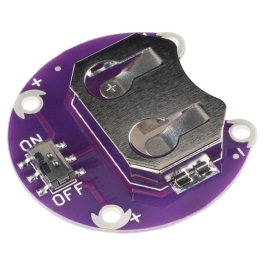
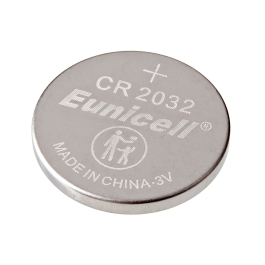
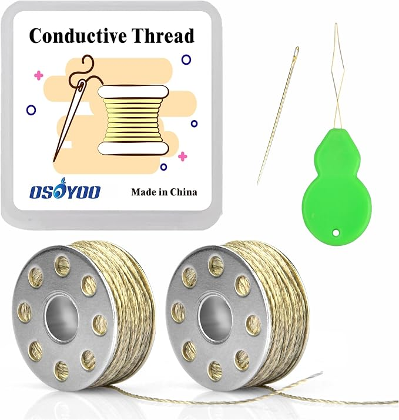
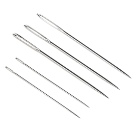
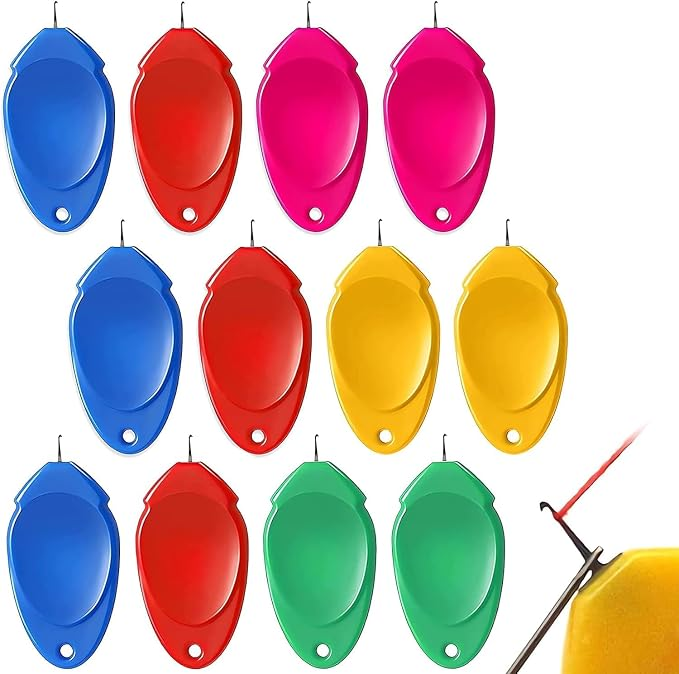

Monday, November 16, 2026 · Room 14 · Wearable Technology
Jennifer’s model:
a light-up hat.
Build a removable felt patch with one verified sewable LED, a switched coin-cell holder, and two separate conductive-thread paths. Attach it to one purchased white bucket hat after the circuit works. The model demonstrates the sewing and electric-circuit skills for students’ individual wearables.
Pull these exact Stauffer items.
The spreadsheet marks these items received, but the remaining classroom stock must be counted after previous workdays. Quantities below are for one mentor demo, not all 18 Wearables students.






Fabric and decorations to stage
| Purchased item | Pull |
|---|---|
White bucket hat B0DTTJ5WZB | 1 |
Rtteri felt sheets B0BKQ37Z2L | 2 sheets |
ECOHomes sew-on hook-and-loop B0G6KQC3P5 | 8–12 inches |
Aleene’s Fabric Fusion glue B078HK7ZQ5 | 1 bottle |
TULIP Puff Paint B0BRP31W2R | 1 set |
Coats & Clark nonconductive sewing thread B0033PEEDI | 1 spool |
Classroom tools to locate
Scissors, a fabric marking pencil, a labeled needle cup, measuring tape, and a multimeter if available. The purchase list does not confirm all of these as separate Stauffer purchases.
The circuit must make a complete loop.
Show students three ideas
Energy: The approved cell supplies low-voltage power.
Complete circuit: A positive path and a negative return path are both required.
Short circuit: Conductive threads must not cross or touch, including on the underside.
Assembly: prepare the wearable prototype.
- Test components first. Place the actual Leyal LED and switched holder next to their packages. Confirm printed + and − and any needed current limiting. Have Tri approve the specific parts before inserting a battery.
- Cut a removable 4 × 5-inch felt patch. Leave space for a battery holder along the bottom and a visible LED in the center. Draw a pink positive route and a green negative route that stay separated.
- Secure parts without a battery. Use a small amount of nonconductive thread to tack the holder and LED flat. Leave the cell slot and switch accessible for adult-controlled testing.
- Sew the positive connection. Thread a large-eye needle with conductive thread. Stitch through the holder’s + pad several times, then run short stitches to the LED + pad. Secure several loops there; knot and trim short.
- Sew the negative connection. With a separate length of conductive thread, connect holder − to LED −. Check both faces of felt for crossings, stray strands and metal touching across paths.
- Perform a mentor-supervised power test. After approval, place one CR2032 in its holder; switch ON briefly. It must shine steadily without heat, smell, or a need to squeeze the stitches. Switch OFF, then remove the cell before adjusting anything.
- Attach the patch. Sew the purchased hook-and-loop tape to the patch and hat with regular thread. Do not glue or paint over electrical pads or the switch. Make the patch removable and repairable.
- Decorate and photograph. Add felt and paint only after the electrical demonstration works. Capture front, back, and an adult-supervised light-up photo; label the project bin “Jennifer · November 16 Demo.”
Jennifer’s readiness checklist
- □ Correct ordered components identified; LED and power checked by Tri
- □ One LED works and can switch off reliably
- □ Front/back stitches show no crossings
- □ Patch is removable and switch is accessible
- □ Two photos and one short 30-second explanation ready
- □ Loose batteries and needles secured in adult-controlled containers